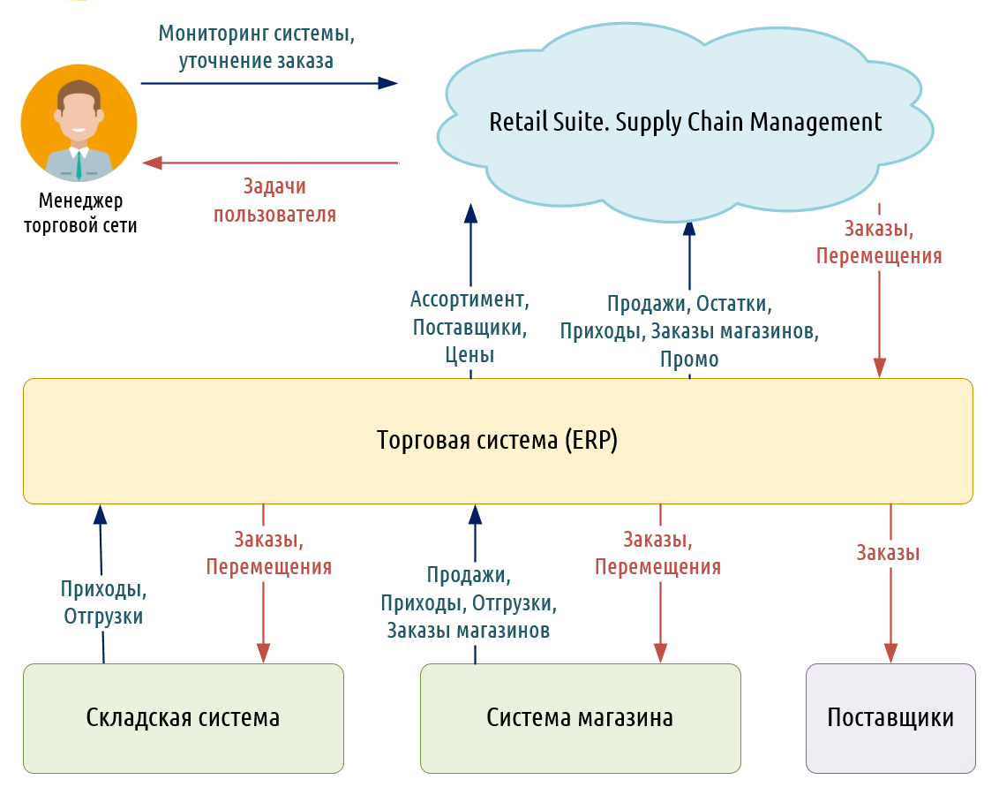

Как работает?
Цели SCM заключаются в создании оптимальных планов использования технологических
линий, подробно расписывающих, что, когда и в какой последовательности надо
изготавливать с учетом ограничений мощностей, сырья и материалов, размеров партий и
необходимости переналадки оборудования на выпуск нового продукта. Это помогает
добиться высокого удовлетворения спроса при минимальных затратах.SCM ориентирована
на повышение эффективности и снижение затрат. Эти потребности не изменились,
изменилось другое: заказчик является главным в определении приоритетов SCM. С помощью
этой концепции можно уменьшить издержки производства и увеличить прибыль
производства. SCM является логистической технологией, что позволяет ей оптимально
распределить ресурсы, связанные с управлением материальными (товарными) или
информационными потоками.
Концепция SCM позволяет решать задачи интегрированного управления функциональными областями логистики и
координации логистического процесса фирмы в логистике в зависимости от бизнес-платформы. Системы ERP с модулем SCM
позволяют увеличить скорость прохождения заказа в 6 раз и в 2 раза повысить удовлетворенность клиентов параметрами
логистического сервиса.
С помощью SCM решаются такие задачи, как планирования, координирования, производства, доставка товаров и услуг.
Цепочка поставки выполняет две основные функции:
- Физическая функция цепочки поставки видна любому: материалы превращаются в детали, а те – в готовые изделия, и
все это тем или иным образом перемещается в пространстве.
- Посредническая функция цепочки поставки менее очевидна, но не менее важна – на рынок должно приходить то, что
нужно потребителям.
Looks like CSS3 supports multiple background images;